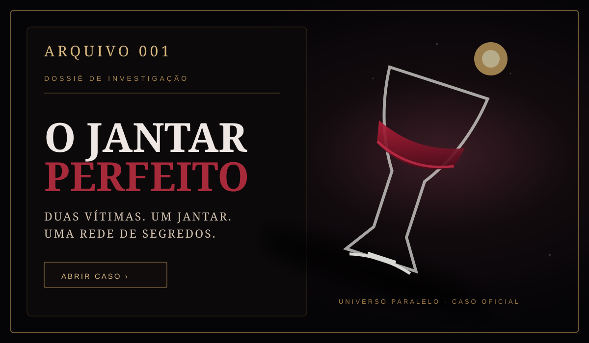

ARQUIVOS · INVESTIGAÇÃO
Entre nos Mistérios.
Algumas histórias não foram feitas para serem apenas lidas. Elas precisam ser investigadas. Examine pistas, conecte pessoas, questione versões e descubra o que realmente aconteceu.
“A verdade raramente está onde todos estão olhando.”

ARQUIVO 001
O Jantar Perfeito
Duas vítimas. Um jantar sofisticado. Uma morte por envenenamento. E uma rede de relações que parece muito maior do que o crime inicialmente revela.
Investigar caso →Mais arquivos serão desbloqueados em breve...